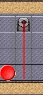
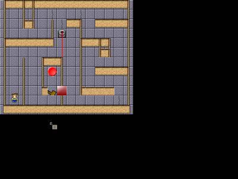
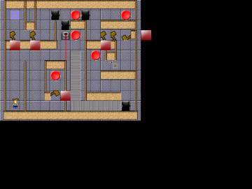

Escape From the Funky Factory
Level Editor Tutorial
By Jeff Verkoeyen and Mark Christoforetti
Last Edited: 7/17/2003
©2003 TDA
Table of Contents:
| A Note to the Reader |
2 |
| Welcome to the EFFF Interface |
3-5 |
|
The Mouse |
3 |
|
The Menu |
3-5 |
| Getting Started: Editing the Tile Map |
6-8 |
| Placing Objects and Timmy |
9-10 |
| Placing Timmy |
9 |
| Placing Objects |
9-10 |
|
Synchronization |
10 |
|
Collision Detection |
11 |
| Saving/Loading a Level |
12 |
| Saving a Level |
12 |
| Loading a Level |
12 |
| Level Making |
13-33 |
|
The Objects |
13-27 |
|
Conveyor Belts |
14-15 |
|
Laser Beams |
15-17 |
|
Turntables |
17-18 |
|
Hammers |
19-20 |
|
Buttons |
20-21 |
|
Pits |
21-22 |
|
Cranes |
22-23 |
|
The Goal |
23 |
|
Multiple Obstacles |
24-25 |
|
Timers |
25-27 |
|
Making Your First Level |
27-32 |
|
General Level Making Tips |
32-33 |
| Customizing the Engine |
33-34 |
| BMP Loading |
33-34 |
| Setting the Next Level |
34 |
| Appendix |
35-38 |
| Hotkeys |
35 |
|
The Mouse |
35 |
|
Shift and Control |
35-36 |
|
BMP Info |
36-37 |
|
Tile BMP |
36 |
|
Object BMP |
36-37 |
|
Main Character BMP |
37 |
|
Transition BMP |
37 |
|
The Objects at a Glance |
38 |
| Contact Information |
39 |
A Note to the
Reader
Welcome
to the world of Timmy. For all who don’t know, Timmy is the main
character in Escape from the Funky Factory (EFFF), a game being made by a team
at The Developer’s Alliance (TDA).
EFFF
is our first project at TDA, and we have only been around for about three and a
half months now. However, this does not mean we are beginners here at TDA.
Actually, most of us have made our own companies or development groups in some
way or another, but now we have merged ALL the groups together into one,
creating The Developer’s Alliance. Mostly everyone has had some sort of
experience with a programming language, art, or music in the past, and it is a
prerequisite that you have some sort of talent to contribute to it; we don’t
want just anyone joining up to the site.
Now
that you know a bit about the history of TDA, we can move on to what we have
done over the past three and a half months.
Well,
on April 03, 2003, the idea for TDA first came up on a message board for the
NYLF Tech (National Youth Leadership Forum on Technology). You can view
that original message here:
After
that first post, there were many replies, and over time, we got a Yahoo! Group
organized. This, however, was not enough for our growing group, so we
bought www.TheDevelopersAlliance.com,
and we are now situated there.
Currently
(at the time of writing of this document), there are 51 people in the group, all
ranging in their skills, but all with a common idea for TDA.
~Jeff Verkoeyen, AKA: jverkoey/IVGDA
~Mark Christoforetti, AKA: marcus4309
Welcome to the EFFF Interface
The
first part of the tutorial is the introduction to the level editor itself, and,
well, here it is! I am going to introduce you to the basics of the editor,
and hopefully you will have a nice feel for it once you finish this section.
First
off, let’s learn how to load the editor (just in case you don’t know).
If you don’t have the most current version of the editor (or you don’t have
it at all), you can get it at TDA’s website here:
http://www.TheDevelopersAlliance.com/
You
can find the editor and the game there by searching around a little bit.
Once
you have both the editor and the game, all you will need to do is run
“LevelEditor.exe,” and you should get a screen that has your mouse in the
center (or somewhere) inside it.
The Mouse
This is your friend, the mouse. You are
going to get very used to seeing him, so right now I’m going to tell you about
the different states of the mouse, and what each one means.
This is the Object Mouse. When you
see this mouse that means you are in Object Placement Mode, which means that you
can place objects, such as conveyor belts, buttons, pits, lasers, etc.
This is the Tile Mouse. When you
see it, you are in Tile Placement Mode. Left clicking with this mouse,
will allow you to select which image will be displayed in the tile that you have
selected.
This is the Player Start Position Mouse. This is quite self-explanatory. This mouse tells you that you are in Player Start Position Mode and allows you to set the starting position of the main character.
Finally, this is the default mouse (I zoomed in on it so you could see it a bit better). Whenever you see this mouse, it usually means that you are in a menu or something of the sorts.
The Menu
Now
that you should have a nice understanding of the mouse, let’s start messing
around with the menu system a bit. In the program, hit escape to bring up
the menu. This is what it should look like for you (might be different,
depending on which version of the program you have).
This
is the basic menu system that you will find in v0.72 of EFFF and above (changes
may be applied). As you can see, there are many different things you can
edit about the level. Followed is an explanation of each function,
starting with the first column and going down, and then moving to the second
column and going down, etc.
New
– Begins a new level. If you are working in another level when this
option is selected, you will be prompted to “erase this level and start a new
one.” By erase, the editor just means clear it from the screen. As
long as the file you are working in is saved, it will still be there next time
you load it.
Load
- Loads a level so that you may edit it. If a level has been
finalized, however, you will NOT be able to edit the level again. Learn
more about loading on page 12.
Save
- Saves the current level to the specified place. If you want, you can
finalize the level and make it un-editable again from the level editor.
You will be prompted if you want to finalize the level, but you will not be
forced to leave the editor, just in case you don’t want the level finalized.
DO NOT finalize the level unless you are sure that you are done with it.
It is wise to make a backup copy of your level in case you accidentally finalize
it when you did not wish to. See page 12 for more on saving.
Exit
- Self-explanatory. Exits the level editor. Make sure you save
changes before exiting, as there is no prompt asking you to do so.
Show/Hide
Grid - Shows or hides the grid for the level, very handy when placing
objects and obstacles.
Fill
Grid - An extremely useful feature that allows you to fill in the entire
level with a certain tile. This saves a lot of clicking, and is very
useful for picking what tile you want the “floor” of your level to be.
Change
BMP - This is a non-click-able text, just saying that the buttons below
change the bmp (bitmaps/pictures) of the area listed.
Sprites,
Objects, Tiles - When you click on any of these buttons, you will be sent to
a load screen where you can select the bmp (bitmap) that you want to use for the
mapping of each area. Very handy if you want to completely customize your
own levels. Sprites (in case you didn’t know) are for Timmy and his
various movement positions, objects are for the various obstacles in the game,
and tiles are the layout of the level (the walls, etc.). Be sure to check
out the various versions of the tile bmp that come with the game (located in the
“Official Levels” folder). See page 33 (Customizing the Engine) for
more details on loading custom bmp files.
Transition
– This allows you to add a transition bmp file. This picture will be
displayed while your custom level is being loaded. It can serve as a type
of “introduction” to your level. See page 33 (Customizing the Engine)
for more details on loading custom bmp files.
Info
- Shows the currently loaded bmp’s for each area.
Reset
– If you have loaded any custom bmp’s, this will reset them to the
default (sprites.bmp, objects.bmp, and tiles.bmp).
Next
Level - Sets the next level that you want to be run after this one, leave it
blank if this is the final/only level. This feature allows you to link
your custom levels together if you so choose.
Info
- Shows the details of the next level, if there is one.
Reset
– Resets “Next Level” to the default, which means there will be no
next level selected.
Collisions
- Enables/Disables collision detection mode. In CD (collision
detection) mode, you can set the collision detection for each tile on your tile
map. See page 11 for more details.
Synchronize
– Synchronizes all of the objects that you have placed. Very useful
for getting hammers to swing at the same time, getting conveyor belts to
“flow” together, etc.
|
MODE |
INFO
(in the upper left of the screen) |
Object
Placement
|
position
the object will be placed in (in pixels) |
|
Tile
Placement |
Tile
position (there are 450 tiles for you to use – 25 rows x 18
columns), tile value (the numerical value of the tile located
where the mouse is), and Tile collision detection value (a value of 1
means EFFF will recognize the tile as a wall,
a value of 0 means EFFF will recognize the tile as a tile that can be
walked on) |
|
Player
Start Position |
none |
At the bottom of the screen in all modes will be the author and version
of the EFFF level editor that you are using.
Most of the items on the menu have hotkeys that you can
use to easily get to them. See the
Appendix on page 35 for more details.
In this section of the tutorial, we will start placing
tiles on our tile map. First off,
we need to get into tile placement mode.
To get into Tile Placement Mode, just right click until
you get to the tile mouse.
HOTKEY:
You can use a hotkey to get to the placement mouse.
Just hit 2 on your keyboard, and you will be in Tile Placement Mode!
Now that you are in Tile Placement Mode, you can click
around on the screen a bit and place some tiles.
After messing around with it for a little bit, your map
will probably look something like this:
Now, if you are anything like me, or any other person on
this planet, you will get annoyed after about the 20th click.
That is exactly what the Fill Grid command is for, and
you will soon grow very fond of this command.
To fill your tile map, all you have to do is hit escape
to bring up the menu, and then click Fill Grid.
HOTKEY: You can also hit
“F” on your keyboard to bring up the Fill Grid box.
This is what the default Fill Grid box looks like:
Hit the arrow keys a few times until you
get to the tile that you want to fill the map with, and then click Fill.
It’s as simple as that! Your
map should then be filled with your requested tile:
Ok, so you have a nicely filled up tile map now,
that’s good, but what if you want to add some other stuff to it?
Well, this is very simple to do.
Just go back in to tile placement mode, and click on the tile that you
want to change.
There are a number of ways of changing each tile.
You can do an incremental (going up) change, or a decremental (going
down) change. To go up, just do a
normal left click. To go down, hold
either shift key and then left click. With
the ability to go both up and down, you won’t have to scroll all the way
through your tiles just to get back one spot.
You can also fill the entire grid, as discussed earlier.
If you want to fill a good chunk of the grid, but not
the entire thing, the “Fill Area” command is very useful. Bring up the menu by hitting escape, and then select “Fill
Area.” At this point, the editor
will exit out of the menu and it will seem like the command did not work.
This is not true. If you notice, your mouse is no longer in any of the three
placement modes, and there is just the black selection arrow.
The editor just wants you to select the area to be filled.
Do so by holding down the left mouse button and then dragging:
HOTKEY: Pressing T on your
keyboard has the same effect as going into the menu and selecting “Fill
Area.”
After releasing the left mouse button, the “Fill
Grid” box will come up again. Select
the tile you wish to use as you did for the “Fill Grid” command, and
that’s it!
Now, you are probably thinking, “Sure, that’s great, but what if I want to keep using the same tile over and over, but I need to use the tile all over the map, not just in a neat little box?” Not a problem. When in tile placement mode, holding down either Control key and then left clicking will allow you to place the last tile that was used with either the “fill grid” or “fill area” commands. This is very handy if you are repeatedly using the same tile, but it takes awhile to scroll through the pictures to get to that tile. For example, let’s say that the tile you want to use is the tenth one in line. It takes an awful lot of clicking to get to it, especially if you need to use it repeatedly. All you have to do is use the “Fill Area” command once. After that, just hold down “Ctrl” and click away! Instead of taking ten clicks per tile to get to the right picture, it will take only one.
 Placing Objects and Timmy
Placing Objects and Timmy
You are probably wondering why I
combined placing Timmy with placing Objects; that is because the placement of
both objects and Timmy is VERY simple to do, and requires only one click of the
mouse.
First off, let’s place Timmy. Make sure you are in Player Start Position Mode (you should
see a mini picture of Timmy on the mouse).
If you are not in Player Start Position Mode, just right click the mouse
until you are.
HOTKEY:
To quickly switch to Player Start Position Mode, just hit 3 on your
keyboard.
Now that you are in the correct mode,
click anywhere on the screen, and Timmy will appear at the position of your
mouse. You can hold the mouse
button to move him around, and once you let go, he will be placed there. If Timmy is not where you want him, just click somewhere else
to place him where you want him.
After you have placed Timmy, you will now
be allowed to save the level. However,
we won’t be covering saving until page 12.
Next, we want to place some objects.
Get into Object Placement Mode by right clicking on your mouse until you
see the Object Placement mouse (the arrow with a little conveyor belt picture).
HOTKEY:
You can hit 1 on your keyboard to get in to Object Placement mode easily.
Once you are in the correct mode, just
click your left mouse button, and you will place the default object, a conveyor
belt, on the screen. However, you
will not actually place the object until you let go of the left mouse button.
This way you can drag the object around the screen to exactly where you
want.
TIP:
Hold down either shift key while pressing the left mouse button to lock
the object to a tile. Placing
objects in this manner is a huge time saver and allows you to link objects such
as conveyor belts very easily.
Once you let go of the left mouse button,
you will place the object at its current position and you will then go into the
Object Edit box. This box varies
depending on which object you are currently editing, so I’m not going to place
a screenshot of it here. Pictures
of this edit box for each of the objects can be found when each object is
discussed in depth, starting on page 13.
Every object you place must be set with
what TYPE of object you want it to be. There
is a large list of objects you can choose from, so pick the one you want by
clicking the arrow keys on the right side of the menu.
This will scroll through the objects up or down, allowing you to easily
pick the object you want to set.
Synchronization
Every level that you make using the EFFF Level Editor
should be synchronized. This allows
all of your objects to “flow” together.
While synchronizing helps the appearance of all obstacles, its effects
are most recognizable with conveyor belts.
Therefore, I am going to demonstrate the importance of synchronization
using conveyor belts.
Here is a basic conveyor belt setup made with the Level
Editor:
While this is nothing that would be used in an actual
level, it proves my point. Look
where the two sections of conveyor belts meet.
That “line” makes our conveyor belt look ugly in a still shot, and
even more so when the conveyor belt is moving.
Now let’s fix our belt by using synchronization.
Synchronizing obstacles is very simple.
First press Escape to bring up the menu.
Then find “Synchronize” (it’s towards the right) and click on it.
Let’s look back at our synchronized conveyor belt:
Just like that, the line is gone!
HOTKEY: Pressing S on the keyboard will also synchronize your level.
Collision Detection
Collision detection, if you don’t already know, is the
way a program can tell if one thing runs into another thing.
Without collision detection, you could go through walls and you
wouldn’t stay on the ground: you’d just fall right through.
As you can see, collision detection is very important in
a game, that’s why it was made as easy as possible to edit the collision
detection in the EFFF level editor.
To modify the collision detection, hit escape and click
Collisions.
HOTKEY:
You can hit C on your keyboard to quickly get into collision detection
mode.
As soon as you get in to collision detection mode, you
will see your screen fill up with red triangles. These triangles are the markers of what type of collision
detection is being done on each area. An
empty triangle means that that tile is walk-able, and a filled triangle means it
is not walk-able. Left clicking on
a filled triangle will make it empty, while left clicking on an empty triangle
will fill it.
If you are still confused, just think of it this way:
when a triangle is filled, you can’t walk through it, but when it’s empty in
the middle, you can.
Now try messing around with the collision detection by
clicking on any areas that you don’t want the character to walk through, and
make some paths around the level.
NOTE: Don’t forget collision
detection! Without it, you can just
walk right through any level.
Saving/Loading a Level
Saving with the EFFF editor is very
simple. Merely hit escape and that
will bring down your menu. Then
click save, and you will be prompted with where you want to save the file.
Type in the name of your file, and hit ok.
HOTKEY:
You can also press S on your keyboard while holding down either control
key to bring up the save menu.
NOTE: EFFF uses
the format, .eff for all EFFF levels. This
format will automatically be selected for you when you choose to save your
level.
After pressing ok, you will get a prompt
that should look somewhat like this:
When
you see this warning, HEED IT! Never
finalize an uncompleted level, because you will have to start all over again to
get it to work. Finalizing levels
makes it so when you send your level to someone else, they can’t just edit it
and walk to the end of the level. It
is definitely a smart idea to keep an extra copy of your levels until you are
sure that you will not be editing them again.
NOTE: If you are a
more advanced user that has a hex editor, it is possible to use this hex editor
to unfinalize levels that were finalized by mistake.
Just change the first set of numbers (which should be something like 001
or 002) to all 0’s. That should
do the trick.
The only pre-requisite of saving levels
is that you have given the player a start position.
Without this, the program would probably crash when you try to play the
level.
Loading a level is also very easy to
do. Get back in to the menu again,
and hit the load button. This will
bring up a box asking you where the file is.
Select your file, and it will automatically be loaded into the editor.
HOTKEY:
Holding down either control, key and then pressing L will also bring up the load
dialog box.
A successful EFFF level will make use
of many objects. All of the objects
you use must work together to create a fun but challenging experience for the
player. The following list details
all of the objects in the game, what options about each can be edited, and tips
to consider for each.
First off, here are three options that
can be used for almost all obstacles:
Disable/Enable:
Activates/deactivates an obstacle. For
conveyor belts and turntables, activating/deactivating will make them move the
opposite direction, not turn them off.
Delete: Deletes the obstacle.
NOTE: PLEASE READ THIS! If you delete an object, but had placed more objects after you made the object being deleted, but before you deleted the object, the old objects will “move up.” This will throw off all of your buttons, multi obstacles, timers, and anything else that requires an object to be selected. Here’s an example to better explain what I mean. Let’s say you have six objects. First, you placed a button, then you placed 3 pits, then a hammer, and lastly a timer. You set the button to affect the hammer, and then you set the timer to affect the hammer. When you place the timer, you realize that there was no need for the button, so you delete it. Look at the following tables:
Before Deleting Button:
|
Object |
Object Number |
|
Button |
1 |
|
Pit |
2 |
|
Pit |
3 |
|
Pit |
4 |
|
Hammer |
5 |
|
Timer |
6 |
After Deleting Button:
|
Object |
Object Number |
|
Pit |
1 |
|
Pit |
2 |
|
Pit |
3 |
|
Hammer |
4 |
|
Timer |
5 |
In both cases, the timer (which was set
to affect the hammer) will affect object number 5, because that is the object
number of the original hammer. Looking
at the second table, we realize that the timer will now affect itself,
accomplishing nothing. In other
words, be careful when deleting objects, and try to delete an object only if it
was the last object placed.
Done: Click this when you are finished editing your obstacle. This will place it into your level.
Conveyor belts are quite possibly the simplest obstacle
in EFFF. Their purpose is nothing
more than to move Timmy in a certain direction (up, left, right, or down).
After placing a segment of a conveyor belt, you will get
a box that looks like this:
Move Direction: Clicking on whatever word
appears here will cycle between the 4 directions a conveyor belt can point –
up, down, right, and left.
TIPS:
-
ALWAYS hold down shift when placing conveyor belts.
It is very hard to line them up properly if you do not.
-
Conveyor belts are best used in conjunction with pits.
Most players will not fall into pits unless something makes them.
Conveyor belts are perfect for tricking players into this trap.
-
Conveyor belts can also be used to make players think they will
not be able to get back from an area when they cross it.
Of course, you always need to make sure they have some way of getting
back, unless you tricked them to their death.
-
Use switches to change the direction of conveyor belts if
needed.
-
In certain cases, you can make a sequence of objects where a
player is forced to take a conveyor belt that will lead to his death.
He will die unless he walks off of the conveyor before he gets to the
object that will kill him. Look at
the screenshot below for an example of this:
Look in the boxed region. Notice that the only way to get to the button is to cross the conveyor belt. Crossing this belt (which is moving to the left) means putting Timmy in danger of falling into the pit, but it must be done to complete the level.
Laser Beams
Laser beams in EFFF look like red lines. Their purpose is to zap Timmy and kill him. Here is what the laser beam edit box looks like:
Direction: Changes the direction the laser will
face (up, down, right or left)
Tile Length: Changes the length of the laser.
Note that each increment must be a full block.
This can cause some problems when placing your lasers.
TIPS:
-
Placing lasers can be tedious because sometimes the way your
level is laid out calls for different size lasers than the presets.
In this case, you will probably have to redo the tiles around the laser
to get everything to fit better.
-
When placing lasers, keep in mind that depending on how the
laser is set up, players may be able to walk next to the laser and completely
avoid it. An easy solution to this
problem is to place two lasers right next to each other as shown below:
-
The default tiles.bmp contains a few extra tiles that look like
laser generators. These can be used
to enhance the look of your lasers, as shown below:


-
Timed lasers are nice obstacles to add to your level (See the
timer section on page 25 for more details on how to create timed lasers).
When adding these, realize that it is possible for Timmy to stand between
two lasers, even if those lasers are next to each other.
This of course depends on exactly how far apart you make them. In general, ½
tile is enough room for Timmy to stand without getting hurt by a laser.
-
Using Shift + Click to place lasers is usually more tedious
than manually placing them, because the lasers will “lock” to the center of
the tile, not the side.
-
To reselect a laser once it has been placed, you need to find
the “beginning” of the laser. Take
this laser for example:
- This laser was placed on the left tile, and its direction was set to “Right.” If you attempt to reselect the laser on the right side, you will just place a new obstacle instead. The only way to reselect it is to (when in Object Placement Mode) select the LEFT side of the laser, because that is where it was originally placed.
Turntables
Turntables turn Timmy in
place. They can be the most frustrating of all of EFFF’s
obstacles. They need to be used in
conjunction with other obstacles. If
they are not, there is no point in having them.
Here is the turntable edit box and explanation:
Turn Direction: Toggles between CW (clockwise)
and Counter CW (counter clockwise). CW
will turn Timmy to his right, while Counter CW will turn him to his left.
TIPS:
-
Don’t forget to use Shift + Click when placing turntables in
order to center them easier.
-
Turntables are great to place next to pits.
When doing so always make sure the turntable turns Timmy TOWARD the pit
(what’s the point otherwise?). Here
is an example of a basic pit/turntable setup:
-
notice that when Timmy moves left, he will go onto a turntable.
This turntable is set to CW (turns Timmy right).
Therefore, if a player moves onto the turntable and continues to hold
down the “up” key on his keyboard, he will run right into the pit.
-
Turntables are also very useful when you need to switch a set
of conveyor belts to the opposite direction in order to allow the player to get
back. See below:
-
The belts in the blue box are moving down.
The belt in the green box is moving right.
When Timmy presses the switches, the belts will be toggled, and therefore
move opposite their current direction. When
this happens, Timmy can get back. Compare
that picture with the picture below:
- This is the same situation, but without the turntable. Now, when Timmy presses the buttons, he will be able to take the belt to the left, but not up. The player would then have to fight the conveyor belt to get back to the entrance of the room. The first case is the way to go, as it makes the belts work together better.
-
With the help of turntables, you can create many types of obstacles.
Be creative. For example,
say you have a line of four turntables. Have
the first three turn one direction, and the last the opposite direction. The player will get used to turning the way the first three
are turning and will be thrown off balance when the fourth turntable is
opposite. You can take advantage of
this, and place a pit next to the last turntable. Players tend to rush through levels and will most likely die
at this obstacle that would have been simple to navigate if the player had taken
his/her time.
Hammers
Hammers are yet another object that can kill
Timmy. These objects are almost
always used with timers, so be sure to check out the timer section on page 25
for more information on how to make timed hammers.
This is what the edit box looks like for a hammer:
Move Direction: Change witch way the
hammer faces.
TIPS:
- Hammers almost always need to be used with timers. Otherwise, Timmy will have no way of getting past the hammer. The only exception to this is if the hammer can be turned off by a button.
- Be sure to change the tiles around the hammer to make it look more natural. Compare the following pictures:
- In the picture on the left, the hammers appear to come out of nowhere. This has a very negative effect on the appearance of your level. The picture on the right looks much better. Always keep this in mind when you place your hammers. If you have to change your tiles for hammer placement, do so.
- Sometimes, if you are having a hard time getting your tiles to fit the hammer positions, you can change the hammers to fit the tiles instead. Manually placing hammers (instead of using Shift + Click) can serve this purpose.
-
Lone hammers are not very difficult objects to get past.
However, place many hammers in a row and you now have a formidable
obstacle. Just be sure to time your
hammers properly.
Buttons
Buttons allow for the puzzle aspect of EFFF.
They toggle other objects on/off. Learn
them. Use them well. Stump
players. Here is the edit box for a
button:
Affecting Obstacle: Use the arrows to
select the obstacle you wish the button to toggle.
When doing this, look for the blue arrow (
) to see what object will be affected. Don’t
forget to place the object you want the button to affect before you place the
button.
TIPS:
- With the way EFFF buttons are set up, it is NOT smart to place every conveyor belt, then every pit, then every laser, etc. Walk through the level in your mind and place all objects as you get to them. I bring this up because in the first level I ever made, I placed all of the buttons last. It became very time consuming to cycle through my 40+ objects in the level to get to the ones I wanted.
- When you place an object that will be affected by a button, be sure to place the button immediately afterwards. This allows for much less cycling through the objects to get to the one you want.
- Don’t forget to see the Multiple Obstacle section (page 24) to learn how to make buttons affect more than one object.
- Having buttons affect multiple objects is a great way to make puzzles in EFFF. Here is a simple example:
- In this example, button number one toggles the pit and the top laser. Button number two toggles both lasers, button number three toggles just the top laser, and button number four toggles just the bottom laser. The idea is to turn off both lasers and close the pit in order to open the way to the goal. Because some of the buttons affect multiple objects, a sort of puzzle is created. To solve it, Timmy must press switch one (because it is the only one that will close the pit) and switch four (to turn off the only object that wasn’t toggled yet). Seems simple huh? It is, but it will still take players a few tries to get through it. Many puzzles can be made in this way, but try not to make EVERY puzzle in this way or you will frustrate the player.
-
Don’t forget to use Shift + Click to center your buttons easily.
Pits
Pits are just that—holes in the floor that Timmy can fall into and die in. They are one of the most diverse objects in EFFF because they can be combined with timers for a timed-obstacle effect, left alone for a puzzle-type effect, or combined with other objects such as conveyor belts to become hazards. Here is the pit edit box:
Pits do not need any other editing besides
placing them.
TIPS:
- When pits are toggled off, they disappear. This does not look very natural. To get around this problem, be sure to use the “closed pit” tile instead of a normal floor tile (if you are placing a pit that will be closed by some other object). The “closed pit” tile is the ninth tile in line for all of the tiles.bmp’s included with EFFF. Using this tile tells players that a pit is located where they see the tile and could possibly open depending on what they do. The “closed pit” tile looks like this:
- See the section explaining timers (page 25) to learn how to make a pit open and close every so often on its own.
- If you are just looking to place a few more hazards in your level, pits work great. Be sure to use conveyor belts and turntables to trick players into falling in the pit.
- Be sure to use Shift + Click when placing a pit to center it.
- Be aware that if you place a disabled pit, you will not be able to see it in the level editor to select it. It can, however, still be selected if you remember its location. Using the “closed pit” tile also works great for keeping track of your disabled pits.
Cranes
Cranes allow Timmy to travel to various parts of a level without needing to walk. Here is the crane edit box:
Drop Position:
When you click these green words, the edit box will temporarily close and the X
and Y positions of the mouse will be given in red wording. When you see the red wording, the Editor wants you to tell it
where the crane will drop Timmy. Move
your mouse (notice the X/Y position change as you move it) and click where you
want the crane to drop Timmy. The
edit box will appear again, and the X and Y position for the crane’s
destination will be displayed in black.
TIPS:
- If you want a crane to be “off” then just disable it. The graphic will not change, and players will have no idea that the crane is off, but it can be done. This allows you to have a button or some other object turn the crane on.
- Giving the player multiple cranes to choose from can add a puzzle effect to your level.
- Cranes can act as hazards by dropping Timmy into pits or on other perilous objects.
- Make sure that you do not use a crane to lead Timmy to a dead end. You either have to kill him or give him a way back, it’s up to you.
- Be sure to use Shift + Click to center the crane activators.
The Goal
The goal is just
that—the end of a level. This is
where Timmy is always trying to get to. Goal
edit boxes are very simple, as there is really nothing to edit with a goal:
TIPS:
- Disabling the goal will do nothing. Goals are always active.
- Keeping in mind that goals are always where your player is trying to go, try to make them hard to get to! There is no sense in making a huge level if the player can get to the goal right off the bat.
- Players will look around the goal in order to get a clue of what needs to be done to finish the level. For example, if the player sees that the goal is in an enclosed room, he/she knows that he/she will need a crane to get there. You can then use this to your advantage. In this case, you could place many other cranes around the level, and have the correct one be the one that the player would least likely expect.
 Multiple Obstacles
Multiple Obstacles
The Multiple Obstacle Object (or MultiObs for
short) is one of the most complicated to use in EFFF. This object allows players to make buttons affect more than
one object. Here is the edit box
for a MultiObs:
Obstacle #1 (blue), Obstacle #2 (red):
Use the arrows to select which objects will be affected when a button
affects the MultiObs. The blue arrow (
) points to the object affected for Obstacle #1, and the red arrow (
) points to the object affected for Obstacle #2.
NumObstacles:
The number of objects to be affected can be changed by clicking on the
green number (either 2 or 3 objects can be affected).
Obstacle #3 (green): The same as red/blue, except this appears ONLY if the number
of obstacles is set to 3. A green
arrow (
 ) points to the object affected by Obstacle #3.
) points to the object affected by Obstacle #3.
USING THE MULTI OBSTACLE:
1) Place all objects that will be affected by the button.
2) Place the proper number of MultiObs to affect all the objects. If there are four or more objects to be affected, remember that you need to count a MultiObs affecting another MultiObs as one of the three obstacles.
3) Place the button that will affect all of the objects. After placing the button, edit it so that it affects one of the (or the only) MultiObs.
4) Select the MultiObs that is affected by the button.
5) If two or three objects need to be affected, set NumObstacles to the appropriate number and then select the objects to be affected (1 for each color).
6) If there are more than three objects, the third object to be affected must be another MultiObs.
7)
Select the MultiObs that is affected by the first MultiObs and repeat
steps 5-7 as needed.
TIPS:
- Remember that MultiObs can be seen only in the editor.
-
Try to place your MultiObs near the buttons that affect them.
This makes it easier to figure out what’s going on if they need to be
referenced.
Timers
Timers, as the name
suggests, are the objects that allow for timed obstacles.
They work very nicely with lasers, hammers, and pits.
Here is the timer edit box:

Affecting Obstacle:
Use the blue arrow (
) to choose the obstacle to be affected by the timer.
Delay: Choose
the amount of time (1 unit = 10 milliseconds) before the object will toggle
using the arrows. Left clicking
will cycle through the numbers quickly, while right clicking will cycle one
number at a time. Note that the
delay is for the time the object is on/open as well as when it is off/closed.
Therefore, it is impossible to have an object on for, say, 2 seconds, and
have that same object off for 3 seconds.
Offset: Set the
offset value using the appropriate arrows.
Again, left clicking cycles through the numbers quickly while right
clicking cycles one at a time. Use
this value (1 unit = 10 milliseconds) to change the amount for the timer to
offset. This value is the amount of
time that the timer will wait before it goes into effect.
Let’s say that the value is 50. When
the level is run, the timer will wait 50 x 10 ms (500 milliseconds, or a half a
second) before it starts affecting the object that you selected.
Offsetting is very
useful when making timed objects near each other.
Let’s say that you have two hammers right next to each other, each
affected by a timer. Without
offset, you must come up with two unique numbers that allow the player to pass
through the obstacle, but at the same time these numbers need to make a
repeating pattern. If they do not,
the player does not have a fair chance of making it through. With offset, all you need to do is pick a value for both
timers that is reasonable enough to allow Timmy just the right amount of time to
make it through unharmed, say 200 (or 2 seconds).
Then set the offset value for just the timer affecting the first of the
two hammers, to a value such as 100 (1 second). When the level is run, the second hammer immediately starts
alternating between swinging for 2 seconds, and not swinging for 2 seconds.
The first, however, waits a full second to give the second a head start.
Then it starts its rotation, allowing Timmy to pass through at the right
moment.
TIPS:
- Use timers to make timed obstacles out of lasers, hammers, and pits. It would take a lot of experimentation, but you could also make timed obstacles out of conveyor belts and turntables (these objects, when affected by timers, would switch between moving one direction, and then moving the opposite direction).
- A value of 150 units (or 150 * 10 ms = 1500 milliseconds = 1.5 seconds) is about the minimum time it will take Timmy to cross a tile. It is possible to get past certain obstacles, such as lasers, in less time. Plan your timers accordingly.
- There is no reason to use timers for MultiObs, the goal, cranes, buttons, or other timers.
- ALWAYS make sure that when you have a specific pattern for objects to follow, the pattern repeats. It is not fair to the player to have a timed obstacle that can be surmounted at only one specific time.
- Patterns should repeat within a reasonable amount of time (no more than 10-15 seconds)
- Try to place timers next to the objects they affect. This makes it easy to find the right timer if you need to change anything.
-
While offset is useful, it doesn’t always help when there are more than
two obstacles in a row. In these
cases, you need to come up with repeating patterns.
To do this, think up a pattern and put it down on paper to see if it
works. Here is an example of a
chart I used when trying to figure out a pattern for 4 consecutive timed pits:
|
Object |
Delay
value (units) |
Start |
After
1.5 seconds |
After
3 sec |
After
4.5 sec |
After
6 sec |
After
7.5 sec |
After
9 sec |
After
10.5 sec |
After
12 sec |
After
13.5 sec |
|
Pit |
300 |
Open |
Open |
Open |
Closed |
Closed |
Open |
Open |
Closed |
Closed |
Open |
|
Pit |
600 |
Closed |
Closed |
Closed |
Closed |
Closed |
Open |
Open |
Open |
Open |
Closed |
|
Pit |
450 |
Open |
Open |
Open |
Open |
Closed |
Closed |
Closed |
Open
|
Open |
Open |
|
Pit |
300 |
Closed |
Closed |
Closed |
Open |
Open |
Closed |
Closed |
Open |
Open |
Closed |
- Looking at the chart, you can tell that Timmy will have enough time to cross. Where closed is in bold font, Timmy should cross/stay on the closed pit. You can also tell that you should go as soon as the first pit closes, when the second pit is already closed. Use this information to test the sequence in your actual level.
- Making a similar “path” through your own patterns is a much more efficient way to test them than by actually doing them in your finished level over and over until you get them right. Of course, you should always test them in your completed level before you consider your level finished.
Making
Your First Level
OK, now that you know
how everything works, let’s make a level.
Following are step-by-step instructions on how to make the very first
level of EFFF, which you may have played if you went through EFFF before reading
this tutorial. This is a very
simple level. It is simple because
it is the first level. It is always
a good idea to “ease” your players into the harder levels. Let’s get started.
First of all, you ALWAYS want to draw your level on paper before you get started. It makes things MUCH easier. Here is an example of one of my drawings (the one I used for level 1 of EFFF):
You can see the level drawn at the top with explanations of all of the switches below. My original purpose for this drawing was to show the other members of my team what I was thinking before I went through the trouble of making it. That is why there is a legend included. However, once I started uploading it to the editor, I realized how much of a time saver drawing really is. From that point, I evolved my system to make it more efficient. I ditched the legend and button explanations in favor of a form of shorthand with which I labeled my drawings. I also made a template using Microsoft Excel so I would not have to spend so much time drawing:
Here is an example of a later level I made using my template and my shorthand (level 9 of EFFF):
Notice I number all of
my buttons. I then number the
obstacles that they will each affect. Start
and finish are represented by X’s. Crane
buttons are represented by a “C,” with a little “B” in the lower right
corner. Crane drop positions are
the same as crane buttons, but without the “B.”
In the upper right corner of the tiles that are cranes goes a number so I
can match each crane up. Lastly,
anything that has a “T” next to it will be affected by a timer.
You can see how using a shorthand such as this would be much faster than
writing all that stuff out every time.
Now let’s have YOU
make the level. We are going to
make level 1 from EFFF (basically what is in the first picture, but with a few
minor changes).
1) Open the level editor by double clicking on “LevelEditor.exe” wherever you have it saved.
2) Use the Fill Area command to fill in the floor tiles of the level. Make a 14 x 12 grid and fill it in with tile number 1 of the default tiles.bmp:
3) Fill in the border of the level and place Timmy in the lower left of your level. Save the level as level1.eff. Continue to save it after each step in case something goes wrong.
4) Fill in the rest of the tiles as shown. Be sure to use the “closed pit” tile where there will be pits.
4) Place all of the obstacles that appear in the lower left of the screen as shown. Place the laser towards the middle of your level, as this will be affected by the button in the lower left. The hammer needs a timer. Be sure to place it right after placing the hammer. Also, change the tile where the hammer is placed to better fit the hammer. Set the delay on the hammer to 150, with no offset. Make sure the button affects the laser in the center. Your level should now look something like this:

5) Next place all of the objects on the right half of the screen. Make sure that when you place the pit it is enabled. The conveyor belt needs to lead Timmy down into the pit in the lower right half of the screen. The button next to the laser in the center should be set to close the pit in the lower right of the screen. In the top right, there are three hammers. Only the two on the sides need timers. Set the delay to 150, with no offset. The other button on the right half of the screen should disable the middle hammer. Make sure all of the hammers start out enabled, and adjust the tile to the right of the hammer on the right to better fit that hammer. Now your level should look like this:
NOTE: There
is a hammer to the right of the other two, but it cannot be seen in this
picture.
6) Place the remainder of the obstacles on the top
half of the screen. The button in
the top right corner should be set to close the pit located four spaces to the
left of the button. The button just
to the left of that pit should close the pit two spaces to the left of the
second button. The two hammers in
the top left corner both need timers. Again,
set the delay to 150 with no offset. Lastly
place the goal of the level. Here’s
what the level looks like now:

7) We’re not done yet! First, bring up the menu and select synchronize (or just hit “S”) to synchronize all of your obstacles. Then go into collision detection mode and set the collision detection as follows:
1) If you have another level made that you want to link to, select “Next Level” from the menu and link your new level to it. If you wish to change the color of the level, or any of the other Bmp’s, now is the time to do so. Note that when selecting other tiles.bmp’s, the “laser generator” in the center of the level will become a blank tile. Now is also the time to add a transition BMP if you wish to do so. Please see “Customizing the Engine” (on the next page) for more information on changing bmp’s.
2) Save your level and test it out using EFFF (select load custom on the main menu, and then select level1.eff from wherever u saved the file).
Now that you have gone through the process of making a level, you should be well on your way to making creative, challenging levels. If you have trouble coming up with ideas, use the following tips or try playing through EFFF for some inspiration.
GENERAL LEVEL DESIGN TIPS:
- ALWAYS start out with a drawing of some sort.
- Use pencil in your drawing so you can experiment. I found that I could make levels just by doodling and trying things out, not having any clue about what I wanted to make.
- You could also try picking some aspect of a level, and working around it. In the second drawing that was pictured (the ninth level of EFFF), I first decided that I was going to have a series of rooms linked by cranes. From there, the rest of the level practically made itself.
- Another example of the above is the seventh level of EFFF. I first decided to have the series of lasers on the left side before the goal. From there, I drew all of the buttons that would turn off the lasers, and filled in objects around all of them.
- To start a level you could also try using a “theme.” By “theme” I mean a certain type of obstacle that will be prevalent in that level. For example, in the second level of EFFF, I had the idea of having many pits that needed to be opened/closed to navigate the level. I accomplished this with buttons, which I spread out across the level and then linked them with walls and objects such as conveyor belts. The result was the second level of EFFF that you probably have already played.
- EFFF has two aspects. These aspects are the action aspect and the puzzle aspect. Make sure they are balanced. For example, if your first level is heavily action-based (many timed obstacles to navigate), make the next level puzzle-based (buttons, cranes, etc). You can/should also try to balance these aspects within one level. Too many puzzles will frustrate the player. Too much action could become equally as annoying.
Customizing the Engine
BMP
Loading
Because of the versatility of the EFFF engine, you can
create and load in your own custom tile maps in to the game.
To do this, all you need to do is go in to the menu, and click the bmp
that you want to change (Sprites, Objects, Tiles, or Transition).
However, there are many rules that you have to follow
when loading in the bmp’s.
First off, the bmp’s width and height MUST be a
power of two. No ifs, ands, or buts
about it. If you do not have the
bmp’s width/height set to a number that is a power of two, it will NOT load
properly.
If you don’t know what a power of two is, it is technically this: 2^x Where x is any integral (non-decimal) value. Here are all of the best-supported sizes of pictures:
1, 2, 4, 8, 16, 32, 64, 128, 256, 512
You shouldn’t need to go any higher than 512,
because most graphics cards only support up to 512.
Here are some examples of picture dimensions:
Good: 256x32,
128x64, 4x4
Bad: 255x32, 13x543,
1024x768
Another thing that you MUST keep an eye out for is
making sure that your bmp IS a bmp. You
are not allowed to load any other type of file other than a bmp.
Jpg’s, tga’s, gif’s, and other picture formats will NOT work.
NOTE: Please make sure that the bmp file is in the
SAME directory as the current level, or it will not be able to find the bmp.
In other words, if you save your level in a folder called “EFFF
levels,” make sure the bmp’s that you are using for that level are also in
“EFFF levels.”
Also, there is a “grid” on the pictures that you
need to follow. The grid is
different for each bmp picture, but regardless, you MUST follow how they work.
APPENDIX:
Refer to the grid in the appendix section (on page 37) to see how each
bmp must be set up.
That is all you need to know about the bmp loading,
however, there are more ways that you can customize the levels with the editor.
Setting
the Next Level
Setting the next level requires only one thing: going
into the menu and hitting the Next Level button.
Once you have clicked that button, you can select your .eff file that you
want the program to load next.
NOTE: Please make sure that the .eff file you wish to load as the next level is in the SAME directory as the current .eff file (the level you are setting this option in). EFFF will not be able to find the level you set as the next level otherwise.
Appendix
Welcome to the Appendix section of the EFFF tutorial. You can find anything here that you couldn’t find above.
Hotkeys
Fill Grid – F
Fill Area - T
Show/Hide Grid - G
Collision Detection - C
Synchronize Objects - S
Load a file - ctrl + L
Save a file - ctrl + S
Object Placement Mode - 1
Tile Edit Mode - 2
Player Start Position Mode - 3
Menu - Escape
Enter - Debug Info
Next Obstacle - N (when the edit obstacle box is open)
Previous Obstacle - M (when the edit obstacle box is open)
Mouse
Buttons
Left
Click
|
MODE |
EFFECT |
|
Object
Placement |
Places
object at the current position of the mouse and brings up the Edit Object
box. |
|
Tile
Placement |
Changes
the tile to the next one in line |
|
Player
Start Position |
Places Timmy (click and drag to move him around). |
Right
Click – Alternates between the Object Placement, Tile Placement, and Player
Start Position modes.
Shift
and Control
Shift
|
MODE |
EFFECT |
|
Object
Placement |
Holding
down shift will “lock” an object to a tile, making it easy to line up
obstacles. |
|
Tile
Placement |
Holding
down shift and then left clicking will cycle through the available tiles
backwards. |
|
Player
Start Position |
none |
Control
|
MODE |
EFFECT |
|
Object
Placement |
none |
|
Tile
Placement |
Holding
down control and then left clicking will place the tile that was last used
for either the Fill Grid or Fill Area commands. |
|
Player
Start Position |
none |
In
addition, when placing timers, control can be used while selecting delay and
offset to make the values increment by one.
BMP
Info
When loading in bmp’s, you have to take into account
many factors.
First, the width and height must both be powers of 2. This means 2^x in math terms, where x is the power. If you plug that equation into a graphing calculator, you can find all of the possible values that you have to use when using pictures.
However, there is a limit that you shouldn’t pass,
unless ABSOLUTELY NECESSARY, and that is 512x512.
Most graphics cards do not support anything higher than that.
Here are all of the basic sizes that your images should be:
1, 2, 4, 8, 16, 32, 64, 128, 256, 512
Also, there are certain grids for each picture that
you must follow, below is an explanation of each one:
Tile
Map BMP:
This bmp has no specific places that you need to put
everything, but you MUST have each tile be 32x32 pixels, and have each tile
lined up to a grid starting at 0,0 (the top left). This way the pictures will not be off-centered.
Also, the engine can automatically tell how many tiles you have in the
bmp, so you don’t need to worry about that.
Below are some examples and their corresponding number of tiles:
BMP Size: Number of Tiles:
128x64 8
256x256 64
The equation for finding the number of tiles in any
given bmp is like so:
(width/32)*(height/32)=NumTiles
Where log(width)/log(2) and log(height)/log(2) do not have decimal values.
Also, make sure that each tile is right next to the
one preceding it. You can also have
blank tiles if you don’t have enough tiles to fill in all of the spaces for
the size bmp you are using.
Object
BMP:
The Object bmp is a little trickier to use, because
all of the objects must be placed in a certain place.
Below is a diagram of where each object must go (this might periodically
change with the engine):
Each box represents a 32x32 area that the
object must be drawn in. If you
don’t understand how the above picture works, just look at the default
objects.bmp file to see it more clearly.
Main
Character BMP:
The MC bmp should not need to be edited, unless you
want the main character to change from level to level, or if you just want to
create your own. If you do want to
edit the main character’s bmp, just open it up in paint and draw your own
pictures over top of the old ones, making sure to follow the EXACT same way the
other picture was drawn.
One final note on ALL bmp’s: The color Pink (full red, no green, full blue) or (255,0,255)
is the Alpha Color. The alpha color
is the color that gets turned transparent.
So, if you want to make any part of your picture transparent, just color
it pink.
Transition BMP:
The transition bmp is a bmp file that is loaded before
the level loads. It comes up on a
screen by itself. After 10 seconds
or so, the level loads. The purpose
of these bmp’s is for further explaining the story or some other aspect of
your level. Any bmp file may be
used, but it MUST be located in the same directory as the level.
The
Objects at a Glance:
|
Object
Name |
What
it does |
Special
Factors |
Editable
Attributes |
|
Conveyor Belt |
Moves Timmy in the direction it is facing |
When toggled, the CB switches to the opposite direction; Enable/Disable has the same effect as toggling |
Facing Direction |
|
Laser |
Kills Timmy |
When toggled, the laser switches on/off |
Laser direction, Length of laser, Enable/Disable |
|
Turn-Table |
Turns Timmy left or right. |
When toggled, the TT turns in the other direction; Enable/Disable has the same effect as toggling |
Turn Direction |
|
Hammer |
Kills Timmy |
When toggled, the hammer turns on/off |
Hammer direction, Enable/Disable |
|
Button |
Toggles another object |
Buttons can be stepped on only once, unless reactivated by another object; When a button is toggled by another object, it becomes deactivated but does NOT affect the object it would have if stepped on |
Object to toggle |
|
Pit |
Kills Timmy |
When toggled, the pit closes/opens up |
Enable/Disable |
|
Crane |
Moves Timmy to another place in the level |
When toggled, the crane becomes inactive |
Drop Position, Enable/Disable |
|
MultiObs |
Points to multiple obstacles |
When pointed at by a button, this toggles all of the objects it is pointing to |
Object to toggle, Number of objects to toggle (2 or 3) |
|
Timer |
Allows for timed obstacles |
When an object is pointed to by a timer, that object will enable/ disable as frequently as you wish; Offset makes it easier to set timers (see for more details) |
Object to affect, Delay, Offset |
|
Goal |
Let’s Timmy pass the level |
Always Enabled |
None |
Contact Info
Jeff Verkoeyen
Programmer:
Main
Engine design, Character and Level Design, Level Editor.
Email/MSN:
bloodright@msn.com
AIM:
ivgdacompany
Yahoo:
ivgda
Website:
http://ivgda.skylockgames.com/
Dav Yust
Programmer-
Object/Obstacle Design, Frame-Limiting, Pictures/Graphics.
Email:
dav@thedevelopersalliance.com
AIM:
delta
coder
Yahoo:
delta
coder
Website:
http://www.freewebs.com/infinitynow
Mark Christoforetti
Head Level Designer
Level
Design, Level Editor Tutorial
Email:
marcus4309@yahoo.com
AIM:
marcus4309
Yahoo:
marcus4309